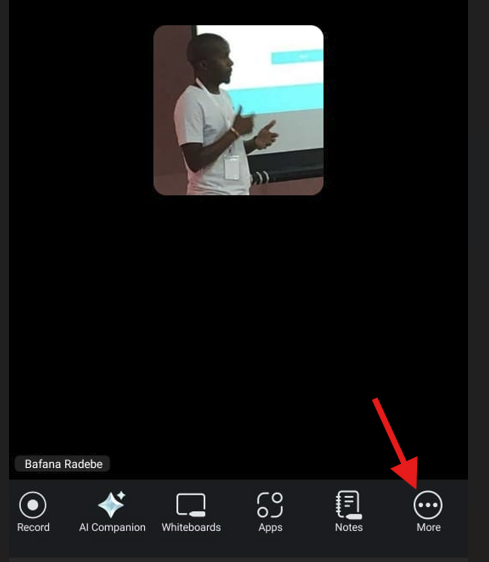
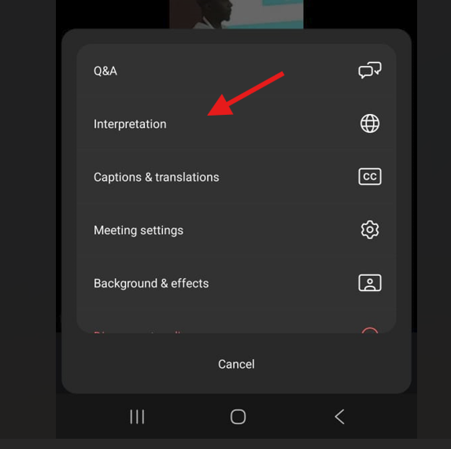

Zoom Translation Language Instructions
How to setup Zoom translation
Please choose how you are connecting to Zoom:
Instructions for Mobile Phone
- Join the Zoom meeting using the Zoom mobile app.
- Tap the "More" button (three dots) in the bottom-right corner.

- Select "Interpretation" from the menu.

- Choose your preferred language from the list.
(Optional) To hear the interpreted language only, click Mute Original Audio
- Tap "Done" to confirm your selection.
Instructions for Laptop
- Join the Zoom meeting using the Zoom desktop application.
- Click the "Interpretation" button in the meeting controls.
- Select your preferred language from the list of available options.
(Optional) To hear the interpreted language only, click Mute Original Audio.
- Click "OK" to confirm your selection.